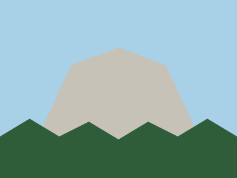

Photo of the month: Eagle Peak at sunriseLong LakeFern GullyCedar FallsSunset RidgeAspen Grove

Granite DomeMisty Meadow
Members' picks
Fern Gully
Cool and shady, even in August.
2.8 miles · 300 ft climb
The Long Lake Loop and Waterfall Trail
Five miles around the lake, three creek crossings, a picnic spot with a view, and Cedar Falls at the far end. Start early: the parking lot fills by nine on weekends.
5.0 miles · 450 ft climb
Granite Dome
A long day with a big reward: the whole valley from the top. Bring plenty of water.